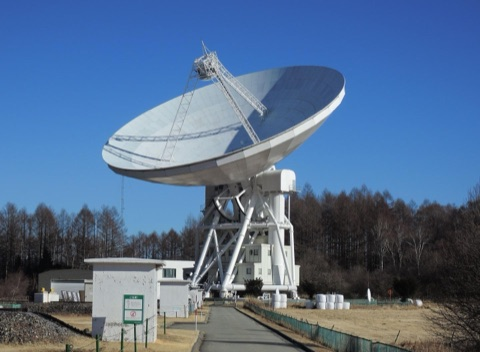
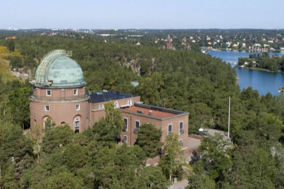
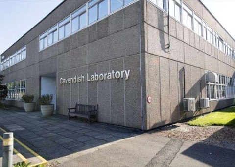
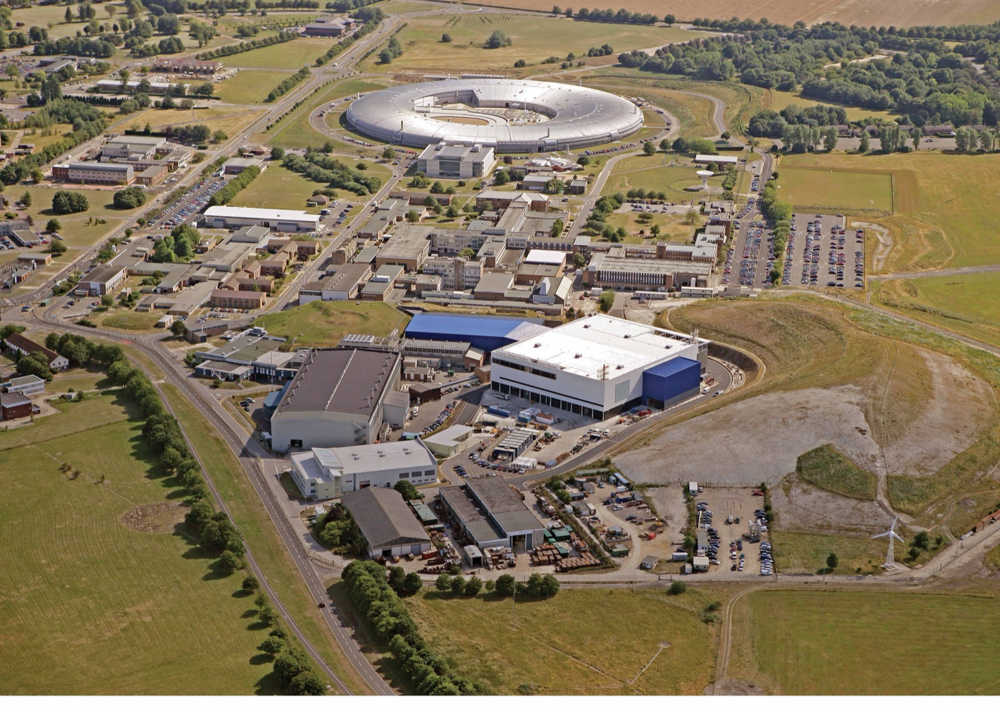

About
Biography and career path.

Who I am
I am Emeritus Professor of Astronomy in the Astrophysics Group of the Department of Physics & Astronomy at The Open University, working on how stars and planetary systems form. I hold a joint appointment as Research Group Leader in the Space Science and Technology Department at RAL Space, Rutherford Appleton Laboratory, where the emphasis is on detectors and instrumentation for space astronomy.
Earlier in my career I studied at the University of Kent, and The University of Manchester (Jodrell Bank Radio Observatory), and then was a postdoctoral researcher at the University of Leicester, then Professor of Physics & Astronomy at Queen Mary College, University of London, and Professor of Space Science at the University of Kent, before moving to the joint Open University / RAL appointment. I have also held visiting sabbatical positions at the University of Tokyo, at Stockholm Observatory, the Cavendish Laboratory, University of Cambridge, and RAL Space, The Rutherford Appleton Laboratory.
My research revolves around studies of Galactic Star Formation, Extragalactic Surveys, and most recently to the development of AGI in astronomical analysis and discovery.
A short timeline
-
2015 – present
Emeritus Professor of Astronomy, The Open University
-
2005 – 2015
Professor of Astronomy, The Open UniversityJoint Professorship with the Rutherford Appleton Laboratory group-leader role.
-
2005 – 2015
Joint appointment as Research Group Leader, Space Science and Technology Department, RAL Space, Rutherford Appleton Laboratory
-
2000 – 2005
Professor of Space Science & Head of Group, University of Kent[One line on the group and its focus, if you wish.]
-
1987 – 2000
Professor of Physics & Astronomy, Queen Mary College, University of London
-
1986 – 1987
Postdoctoral researcher, University of Leicester
Visiting positions & sabbaticals
-

University of Tokyo and Nobeyama Radio Observatory — 1994 -

University of Stockholm Observatory — 1998 -

Cavendish Laboratory, University of Cambridge — 1999 -

RAL Space, Rutherford Appleton Laboratory — 2015 – present
ORCID: 0000-0002-7126-691X